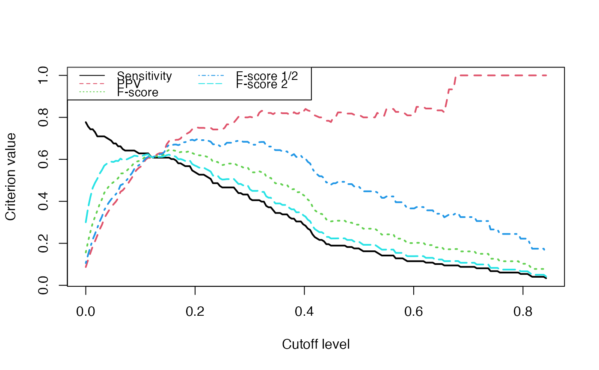

Some basic criteria of comparison between actual and inferred network.
Source:R/omics_network.R
compare-methods.RdAllows comparison between actual and inferred network.
Value
A vector containing : sensitivity, predictive positive value, the usual F-score (2*ppv*sens/(sppvpe+sens)), the 1/2 ponderated Fscore ((1+0.5^2)*ppv*sens/(ppv/4+sens)) and the 2 ponderated Fscore ((1+2^2)*ppv*sens/(ppv*4+sens)).
Methods
- list("signature(Net = \"omics_network\", Net_inf = \"omics_network\", nv = \"numeric\")")
- Net
A omics_network object containing the actual network.
- Net_inf
A omics_network object containing the inferred network.
- nv
A number that indicates at which level of cutoff the comparison should be done.
Examples
data(Net)
data(Net_inf_PL)
#Comparing true and inferred networks
Crit_values=NULL
#Here are the cutoff level tested
test.seq<-seq(0,max(abs(Net_inf_PL@omics_network*0.9)),length.out=200)
for(u in test.seq){
Crit_values<-rbind(Crit_values,Patterns::compare(Net,Net_inf_PL,u))
}
matplot(test.seq,Crit_values,type="l",ylab="Criterion value",xlab="Cutoff level",lwd=2)
legend(x="topleft", legend=colnames(Crit_values), lty=1:5,col=1:5,ncol=2,cex=.9)
